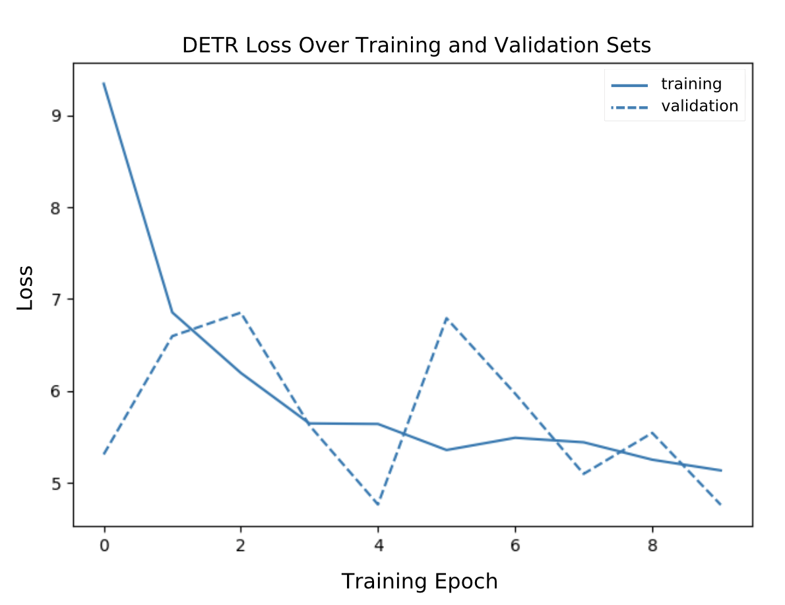
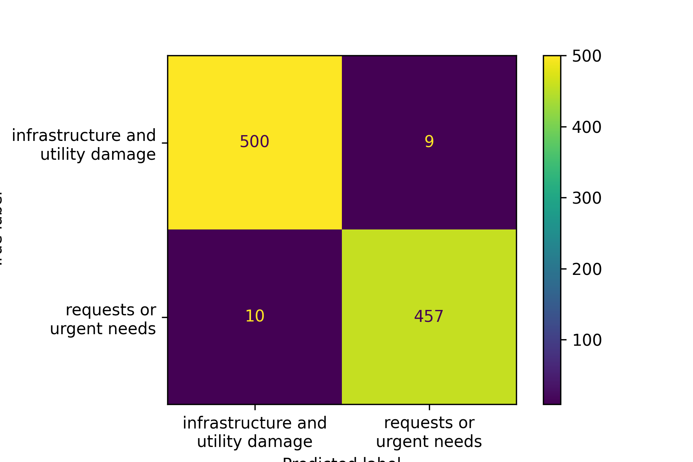

Results


Future Work
We recognize the boundaries in which our platform is confined; however, this first iteration of CERA serves as a proof of concept. We have much more to explore.
- Risk Score Based on Image Analysis: Integrate advanced models to identify additional risk factors such as overhanging tree branches, leaning poles, wear and tear
- GenAI Incorporation: Combine Generative AI with machine learning validation and UX process to enhance the platform.
-
Historical Data for Predictive Risk Scoring: Utilize collected images and assessments on utility pole issues to predict future risk scenarios.
- Community Engagement and Education: Use the platform to educate the community about utility safety. Gamify reporting process, and reward users for active participation. Include user feedback feature for greater interaction and enhancement.